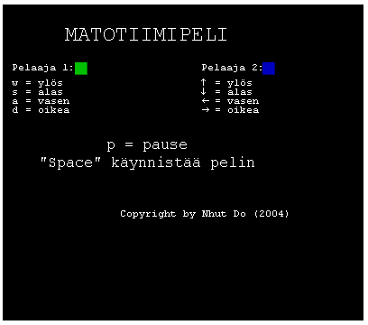
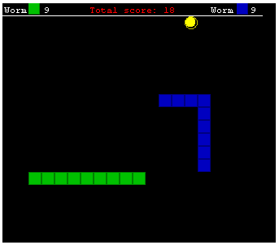
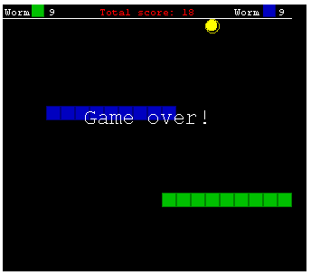

(requires Java plugins installed to the browser)

- to run, use command: java -jar ndgallery.jar
- required: openCV 2.4 (to download page)
- to run, use command: java -jar MotionDetector.jar
- to run with parameters, use command (replace () with your liking): java -jar MotionDetector.jar (true=enable save image or false=disable save image) (true=enable upload file to server or false=disable upload file to server) (true=real image or false=movement image)